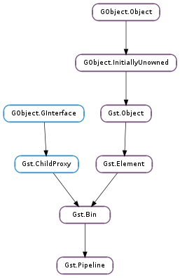

| static | new(name) |
| auto_clock() | |
| get_auto_flush_bus() | |
| get_bus() | |
| get_clock() | |
| get_delay() | |
| set_auto_flush_bus(auto_flush) | |
| set_clock(clock) | |
| set_delay(delay) | |
| use_clock(clock) |
| Name | Type | Flags | Description |
|---|---|---|---|
| auto-flush-bus | bool | r/w | Whether to automatically flush the pipeline’s bus when going from READY into None state |
| delay | int | r/w | Expected delay needed for elements to spin up to PLAYING in nanoseconds |
None
Bases: Gst.Bin
A Gst.Pipeline is a special Gst.Bin used as the toplevel container for the filter graph. The Gst.Pipeline will manage the selection and distribution of a global Gst.Clock as well as provide a Gst.Bus to the application.
Gst.Pipeline.new () is used to create a pipeline. when you are done with the pipeline, use Gst.Object.unref () to free its resources including all added Gst.Element objects (if not otherwise referenced).
Elements are added and removed from the pipeline using the Gst.Bin methods like Gst.Bin.add () and Gst.Bin.remove () (see Gst.Bin ).
Before changing the state of the Gst.Pipeline (see Gst.Element ) a Gst.Bus can be retrieved with Gst.Pipeline.get_bus (). This bus can then be used to receive Gst.Message from the elements in the pipeline.
By default, a Gst.Pipeline will automatically flush the pending Gst.Bus messages when going to the None state to ensure that no circular references exist when no messages are read from the Gst.Bus. This behaviour can be changed with Gst.Pipeline.set_auto_flush_bus ().
When the Gst.Pipeline performs the PAUSED to PLAYING state change it will select a clock for the elements. The clock selection algorithm will by default select a clock provided by an element that is most upstream (closest to the source). For live pipelines (ones that return Gst.StateChangeReturn.NO_PREROLL from the Gst.Element.set_state () call) this will select the clock provided by the live source. For normal pipelines this will select a clock provided by the sinks (most likely the audio sink). If no element provides a clock, a default Gst.SystemClock is used.
The clock selection can be controlled with the Gst.Pipeline.use_clock () method, which will enforce a given clock on the pipeline. With Gst.Pipeline.auto_clock () the default clock selection algorithm can be restored.
A Gst.Pipeline maintains a running time for the elements. The running time is defined as the difference between the current clock time and the base time. When the pipeline goes to READY or a flushing seek is performed on it, the running time is reset to 0. When the pipeline is set from PLAYING to PAUSED, the current clock time is sampled and used to configure the base time for the elements when the pipeline is set to PLAYING again. The effect is that the running time (as the difference between the clock time and the base time) will count how much time was spent in the PLAYING state. This default behaviour can be changed with the Gst.Element.set_start_time () method.
Last reviewed on 2012-03-29 (0.11.3)
| Parameters: | name (str or None) – name of new pipeline |
|---|---|
| Returns: | newly created Gst.Pipeline MT safe. |
| Return type: | Gst.Element |
Create a new pipeline with the given name.
Let pipeline select a clock automatically. This is the default behaviour.
Use this function if you previous forced a fixed clock with Gst.Pipeline.use_clock () and want to restore the default pipeline clock selection algorithm.
MT safe.
| Returns: | whether the pipeline will automatically flush its bus when going from READY to None state or not. MT safe. |
|---|---|
| Return type: | bool |
Check if pipeline will automatically flush messages when going to the None state.
| Returns: | a Gst.Bus, unref after usage. MT safe. |
|---|---|
| Return type: | Gst.Bus |
Gets the Gst.Bus of pipeline. The bus allows applications to receive Gst.Message packets.
| Returns: | a Gst.Clock, unref after usage. |
|---|---|
| Return type: | Gst.Clock |
Gets the current clock used by pipeline.
| Returns: | The configured delay. MT safe. |
|---|---|
| Return type: | int |
Get the configured delay (see Gst.Pipeline.set_delay ()).
| Parameters: | auto_flush (bool) – whether or not to automatically flush the bus when the pipeline goes from READY to None state |
|---|
Usually, when a pipeline goes from READY to None state, it automatically flushes all pending messages on the bus, which is done for refcounting purposes, to break circular references.
This means that applications that update state using (async) bus messages (e.g. do certain things when a pipeline goes from PAUSED to READY) might not get to see messages when the pipeline is shut down, because they might be flushed before they can be dispatched in the main thread. This behaviour can be disabled using this function.
It is important that all messages on the bus are handled when the automatic flushing is disabled else memory leaks will be introduced.
MT safe.
| Parameters: | clock (Gst.Clock) – the clock to set |
|---|---|
| Returns: | True if the clock could be set on the pipeline. False if some element did not accept the clock. MT safe. |
| Return type: | bool |
Set the clock for pipeline. The clock will be distributed to all the elements managed by the pipeline.
| Parameters: | delay (int) – the delay |
|---|
Set the expected delay needed for all elements to perform the PAUSED to PLAYING state change. delay will be added to the base time of the elements so that they wait an additional delay amount of time before starting to process buffers and cannot be Gst.CLOCK_TIME_NONE.
This option is used for tuning purposes and should normally not be used.
MT safe.
| Parameters: | clock (Gst.Clock or None) – the clock to use |
|---|
Force pipeline to use the given clock. The pipeline will always use the given clock even if new clock providers are added to this pipeline.
If clock is None all clocking will be disabled which will make the pipeline run as fast as possible.
MT safe.